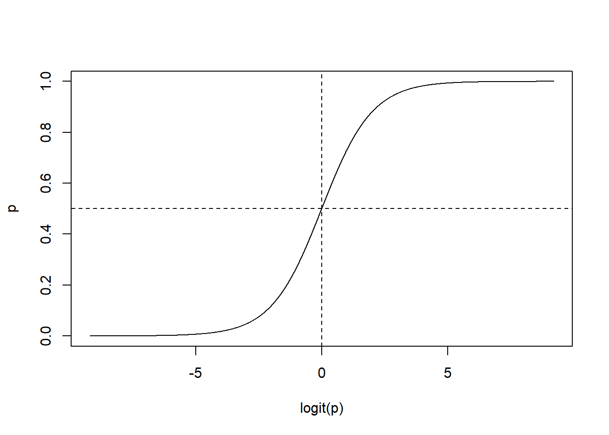
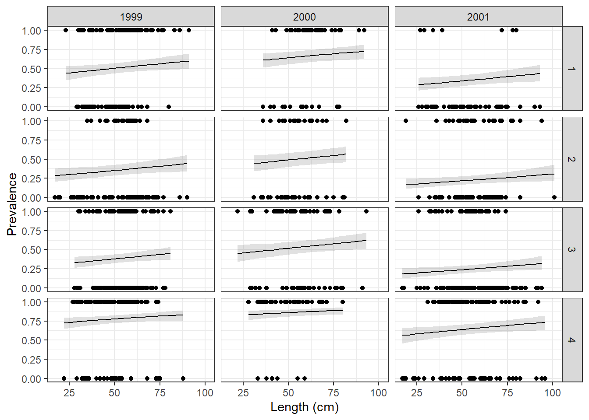
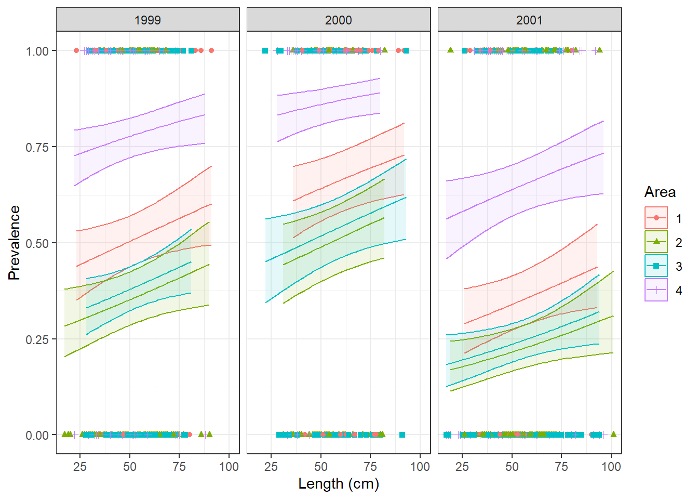

(1/6)/(5/6)[1] 0.2Just as a reminder… We use GLM’s when the predictor and response variables DO NOT have an underlying normal distribution of the residuals or lack an underlying linear relationship.
In Linear Models we model the response as a function of the predictors.
In GLM, we model a function of the response as a function of the predictors. That function is called the link function. So, we are not modeling the response variable (usually “y”) but a link function of the response. So, instead of modeling:
\[ \hat{y} = \beta_0+\beta_1x_1 \]
(where \(\hat{y}\) represents the expected value of y) we model:
\[ logit(p) = \beta_0+\beta_1x_1 \]or
\[ log(\lambda) = \beta_0+\beta_1x_1 \]
We use logit for logistic regression (aka binomial distribution), and we use log for Poisson distributed data.
How to interpret the \(\beta's\)? 🤔
Everything to the right of the = sign is THE SAME. This means, the link function allows us to estimate link(y) as a linear model!
In the simple linear model the \(\beta_0\) is the expected (or predicted) value of y when x is 0. The \(\beta_1\) is how much y changes for a one unit increase in x. This is called the slope and it is very useful! it can tell us how strong the effect of x is on y (effect size). We can analyze whether this effect is biologically important. We can analyze whether it is significantly different from 0. All in all, the \(\beta's\) are super informative. And as the paper we read said, inference is about the \(\beta's\)!
What happens when we have generalized models? The \(\beta's\) represent effects NOT on the response variable, but on the link function of the variable. So \(\beta_1\) represents how much \(log(\lambda)\) changes for a one unit increase in x. But it doesn’t tell us how much \(\lambda\) changes. In order to figure this out, we need to do an inverse link equation:
\(\lambda = e^{\beta_0+\beta_1x_1}\)
For this reason is important to:
Here is a table with the link functions for both Binomial and Poisson distributions.
Save it somewhere important!
| Distribution | link name | link equation | inverse link eq | link function R | inverse link in R |
|---|---|---|---|---|---|
| Binomial | logit | \(\mu = log(\frac{p}{1-p})\) | \(p= \frac{e^\mu}{1+e^\mu}\) | qlogis() |
plogis() |
| Poisson | log | \(\mu = log(\lambda)\) | \(\lambda = e^\mu\) | log() |
exp() |
We went through the Poisson example in class. You can also download the presentation file (from Canvas) and access all of the code we used. During this assignment we will focus on the following:
We use the logistic regression when we have binomial data. Remember, in binomial data the response variable is binary, our responses are limited to 0’s and 1’s. Which is which depends on you, but usually 1 is seen as a “success” or “positive”.
Some examples:
What is the response variable? 🤔
We usually obtain the mean of the response variable. In the grasslandexample, the response variable was KgDMHA, or Kilograms of Dry Matter per Hectare.
In the logistic regression, we are trying to find the probability of an event happening. Look at the examples before this box. If the binary outcomes are pregnant or not pregnant, the response variable is the probability of being pregnant.
If we were exploring whether cortisol has an effect on succesful pregnancies in mice, and the model was glm(pregnancy~cortisol, data=data, family=binomial(link="logit") then, what we are trying to estimate are 1) whether cortisol has an effect on the probability of being pregnant (inference) and 2) what is the probability of a mouse being pregnant given a specific cortisol measurement. This explains why it is not linear. Probabilities go from 0 to 1.
The link equation is the “log of odds”, also known as logit. This equation allows us to move from a system were the values go from 0 to 1 (probability) to one where we can theoretically go from -INF to INF.
The logit link function is: \(\mu = log(\frac{p}{1-p})\) or also known as “the log of odds”. This works because any probability can be converted to log odds by finding the odds and taking the log of that. James Jaccard calls log odds ”counterintuitive and challenging to interpret”. They are not as easy to interpret as the “log” we use in Poisson. However, I don’t think you absolutely need to understand the transformation, you only need to understand why it is useful!
First off, the odds is \(\frac{p}{1-p}\). It is simply dividing the probability of an event occurring divided by the probability of it not occurring. Let’s look at some examples:
In a coin toss with 0.5 probability, the odds ratio is: \(\frac{0.5}{1-0.5} = 1\). We can interpret this as the odds of getting a success (or head) is 1:1 (think 1 to 1, or 50-50)
Let’s imagine the probability of getting a 5 after rolling one die. The probability of this event is \(\frac{1}{6}\), so, the odds are:
The odds are 0.2. This means you will see 0.2 successes for every failure (or one success for every 5 failures).
Finally, let’s think of the odds of me (Alejandro) seeing a car accident during my daily drive to and from campus). I know this is biased, and one semester I will actually sample this for an exercise, but my very biased estimate says the probability is 0.8 (80% chance of seeing one). If this was true, then the odds would be:
Four. Again, think of this as four to one. If I drove five times, I would see an accident 4 times, and “no accidents” one time.
OK, that was a lot of time spent on odds. And the reason I did that, is that my brain struggles thinking in odds rather than probabilities. Which is why we want to present the results in a probabilistic scale. However, this concept is important to understand how it is estimated.
Odds are always “positive”. But the transformation need to potentially be from -inf to inf. Similar to what we do with counts, then we take the log of the odds.
Let’s imagine the probability of winning the lottery is 0.000000000065789. Then, the log odds would be:
-23.44. And if we had an event with high odds (like the accident one):
Here you can see how values higher than 1 (p higher than 0.5) will be positive, and odds lower than 1 (p lower than 0.5) will be negative.
Actually, we can plot the relationship between p (probability) and logit(pi):
pi = seq(0.0001,1-0.0001, by=0.0001)
plot(pi~qlogis(pi), type="l",xlab="logit(p)",ylab="p"); abline(v=0, lty="dashed"); abline(h=0.5, lty="dashed")
What I want you to take away from this whole section is the following:
1- logit(p) ranges from -Inf to +Inf as pi increases from 0 to 1 Take home message
2- logit(p) takes on a full range of values which allow the modeling algorithm to explore a full range of coefficient values in the systematic component of the model In other words, \(\beta_0 + \beta_1x_1 + \beta_2x_2 + ... + \beta_mx_m\) can be unconstrained and can take values from -Inf to + Inf
3- logit(p) is qlogis(p) in r
This dataset (parasitecod.csv) was obtained from the following book:
Zuur, A., Ieno, E. N., Walker, N., Saveliev, A. A. & Smith, G. M. Mixed Effects Models and Extensions in Ecology with R. (Springer New York, 2009).
It’s a highly recommended book (I showed it to you during the first week!)
Load it into R and let’s run a glm.
Before running the glm, I changed some categorical data to “factor” in R. This step is really important, because if you don’t do it, it will take the data as continuous!
Now, let’s run the model!
codmodel1<-glm(Prevalence~Length+Year+Area,data=cod,family = binomial(link="logit"))
summary(codmodel1)
Call:
glm(formula = Prevalence ~ Length + Year + Area, family = binomial(link = "logit"),
data = cod)
Coefficients:
Estimate Std. Error z value Pr(>|z|)
(Intercept) -0.465947 0.269333 -1.730 0.083629 .
Length 0.009654 0.004468 2.161 0.030705 *
Year2000 0.566536 0.169715 3.338 0.000843 ***
Year2001 -0.680315 0.140175 -4.853 1.21e-06 ***
Area2 -0.626192 0.186617 -3.355 0.000792 ***
Area3 -0.510470 0.163396 -3.124 0.001783 **
Area4 1.233878 0.184652 6.682 2.35e-11 ***
---
Signif. codes: 0 '***' 0.001 '**' 0.01 '*' 0.05 '.' 0.1 ' ' 1
(Dispersion parameter for binomial family taken to be 1)
Null deviance: 1727.8 on 1247 degrees of freedom
Residual deviance: 1537.6 on 1241 degrees of freedom
(6 observations deleted due to missingness)
AIC: 1551.6
Number of Fisher Scoring iterations: 4Remember that those coefficients (think of each coefficient as a \(\beta\), so this model has 7 \(\beta's\)) are for the link function:
Look at the summary. And before continuing make sure you understand it. If you don’t, now is the time to raise your hand.
You need to calculate the expected probability (we’ll call this \(\pi\)) of an individual being infected for each of the following two cases:
Remember that:
\[ log(\frac{\pi_i}{1-\pi_i}) = \beta_0 + \beta_1x_{1,i} + \beta_2x_{2,i} + ... + \beta_mx_{m,i} \]
And we are trying to solve for \(\pi\)
Please do not use the function “predict”. You can use algebra to solve this problem, or you can use the qlogis and plogis() functions.
We can use the packages car and emmeans to run an ANOVA and look for differences among some of the explanatory variables
First we run:
Analysis of Deviance Table (Type II tests)
Response: Prevalence
LR Chisq Df Pr(>Chisq)
Length 4.713 1 0.02993 *
Year 54.421 2 1.523e-12 ***
Area 143.079 3 < 2.2e-16 ***
---
Signif. codes: 0 '***' 0.001 '**' 0.01 '*' 0.05 '.' 0.1 ' ' 1And see that there are significant effects of all three factors.
Let’s explore the effects of Year running pairwise comparisons using emmeans:
contrast estimate SE df z.ratio p.value
Year1999 - Year2000 -0.567 0.170 Inf -3.338 0.0024
Year1999 - Year2001 0.680 0.140 Inf 4.853 <.0001
Year2000 - Year2001 1.247 0.179 Inf 6.958 <.0001
Results are averaged over the levels of: Area
Results are given on the log odds ratio (not the response) scale.
P value adjustment: tukey method for comparing a family of 3 estimates Please note that 1) results are averaged over the levels of Area, and 2) results are given on the log odds ratio scale. This is not the response scale. The response scale is probabilistic, so it goes from 0 to 1 (and therefore there could not be a difference of 1.247
Run a pairwise comparison for Area, and a pairwise comparison for Year and Area
Finally, let’s plot it!
First, let’s predict the values. Predict also gives us values on the log odds scale, so, some transformation is needed:
And finally, let’s plot it!
These type of models can be pretty tough to plot. One option is to use a grid, in which each column is a year, and each row is an area:
ggplot(cod2,aes(x=Length,y=Prevalence,ymin=lwr,ymax=upr))+
geom_point()+
geom_line(aes(y=fit2))+
geom_ribbon(alpha=0.15)+
xlab("Length (cm)")+
ylab("Prevalence")+
theme_bw()+
facet_grid(Area~Year)
While tough to interpret, we can see some patterns. For example, fish from 2001 have a lower prevalence probability!
Another way to plot it, is to choose one categorical variable to be presented as colors, and the other one to be at the grid level:
ggplot(cod2,aes(x=Length,y=Prevalence,ymin=lwr,ymax=upr,color=Area,shape=Area,fill=Area))+
geom_point()+
geom_line(aes(y=fit2))+
geom_ribbon(alpha=0.1)+
xlab("Length (cm)")+
ylab("Prevalence")+
theme_bw()+
facet_grid(~Year)
In here, we can see two patterns: 2001 has lower probability of prevalence, while area 4 has a higher probability. Finally, size also has an effect.
Look at the cod data and come up with 3 “biological hypotheses” that you can run as models. Run the three models
Use model selection or any method that you want to compare the 4 models (the model I ran; codmodel1; and the models you ran). And select the best model.
For the best model from question 2 (if the best model is the one I ran, then select the second best model) please do the following:
Moving forward, for each assignment I will ask you 1 or 2 questions in which you will have to apply knowledge from previous classes and assignments.
Data: welldata.csv
1. wellID - ID of well
2. fluoride - mg/L of fluoride in a sample
Research question:
You are tasked with researching whether the mean content of fluoride in a large rural area with >2,000 private wells might be over the EPA recommendation of 4.0 mg/L. You sample 28 wells.
Data: parasitecod.csv
1. Intensity: Number of parasites present
2. Prevalence: 1-parasite present, 0- no parasite
3. Year
4. Depth (in meters)
5. Weight (g)
6.Length (cm)
7. Sex
8. Stage
9. Age
10. Area
Be aware! The weight, length, stage and age covariates are highly co-linear! Use only one at a time.
Explore 3 different hypotheses (make sure to include a null model as part of your hypotheses), but use intensity as your response variable.
Be aware! The intensity response variable is missing some data! Thee are cases were the number of parasites were not counted. You need to deal with this before you can run the models.